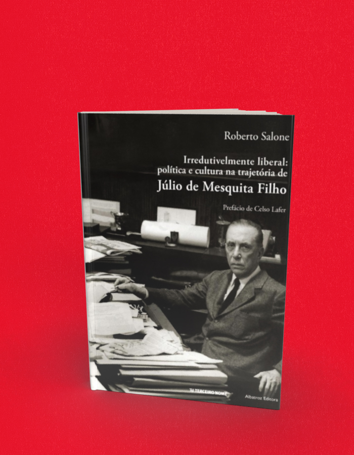

Irredutivelmente liberal Política e cultura na trajetória de Júlio de Mesquita Filho 2ª edição revisada e ampliada
A compra acontece no site da livraria, em uma nova aba. Consulte lá os preços e a disponibilidade. Procure pelo título ou ISBN deste livro.
- Autoria / créditos
- Roberto Salone
- ISBN
- 9788578163075
- Páginas
- 408
- Formato
- 16 cm x 23 cm
- Acabamento
- brochura
Sobre o livro
É tão complexa e rica a trajetória política e social do jornalista Júlio de Mesquita Filho, queeste livro pode ser considerado uma porta de entrada para conhecer a sua obra, o seu legado e as suas lutas para transformar o Brasil numa Nação inclusiva e moderna. Júlio dirigiu o jornal O Estado de S. Paulo por mais de quatro décadas, até sua morte, em 1969. Nesse período participou ativamente dos principais acontecimentos e campanhas que mobilizavam o país, atuando inclusive como protagonista na criação da Universidade de São Paulo. Neste livro, as pinceladas sobre sua vida e obra são uma aula sobre a história do Brasil, já que relatam fatos e promovem reflexões sobre questões cruciais para o país.
Roberto Salone , diplomata de carreira, nasceu em 1977. É bacharel em Direito e mestre em Direito Internacional, ambos pela Universidade de São Paulo. Foi trainee e redator no jornal Folha de S. Paulo. Presidiu a Comissão Especial de Ex-Presos Políticos do Estado de São Paulo. No serviço exterior brasileiro, atuou em Teerã, Genebra e Beirute, onde vive atualmente. O presente livro lhe valeu o título de mestre em Diplomacia pelo Instituto Rio Branco.
← Voltar ao catálogo